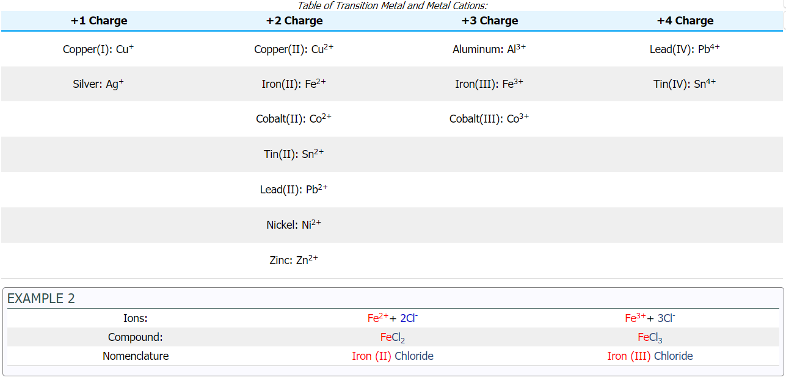

Generally, there are two types of inorganic compounds that can be formed: ionic compounds and molecular compounds. Nomenclature is the process of naming chemical compounds with different names so that they can be easily identified as separate chemicals. Inorganic compounds are compounds that do not deal with the formation of carbohydrates, or simply all other compounds that do not fit into the description of an organic compound. For example, organic compounds include molecules with carbon rings and/or chains with hydrogen atoms (see picture below). Inorganic compounds, the topic of this section, are every other molecule that does not include these distinctive carbon and hydrogen structures.
Compounds made of a metal and nonmetal are commonly known as Ionic Compounds, where the compound name has an ending of –ide. Cations have positive charges while anions have negative charges. The net charge of any ionic compound must be zero which also means it must be electrically neutral. For example, one Na+ is paired with one Cl- ; one Ca2+ is paired with two Br- . There are two rules that must be followed through:
The transition metals may form more than one ion, thus it is needed to be specified which particular ion we are talking about. This is indicated by assigning a Roman numeral after the metal. The Roman numeral denotes the charge and the oxidation state of the transition metal ion. For example, iron can form two common ions, Fe2+ and Fe3+. To distinguish the difference, Fe2+ would be named iron (II) and Fe3+ would be named iron (III).
However, some of the transition metals' charges have specific Latin names. Just like the other nomenclature rules, the ion of the transition metal that has the lower charge has the Latin name ending with -ous and the one with the the higher charge has a Latin name ending with -ic. The most common ones are shown in the table below:
Several exceptions apply to the Roman numeral assignment: Aluminum, Zinc, and Silver. Although they belong to the transition metal category, these metals do not have Roman numerals written after their names because these metals only exist in one ion. Instead of using Roman numerals, the different ions can also be presented in plain words. The metal is changed to end in –ous or –ic.
However, this -ous/-ic system is inadequate in some cases, so the Roman numeral system is preferred. This system is used commonly in naming acids, where H2SO4 is commonly known as Sulfuric Acid, and H2SO3 is known as Sulfurous Acid.
© 2020 Quark. All rights reserved. For Educational purposes only.